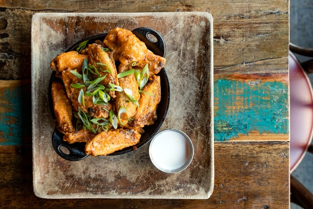

Buffalo Wings

Buffalo Chicken Wing with Sauce Recipe
This recipe for basic Buffalo chicken wings will show you how to create them from scratch in no time. This contains easy-to-follow instructions for making Buffalo chicken wing sauce.
Making this at home allows you to save money while also honing your culinary talents. Instead of going out, bring your pals around for a taste of your culinary creations. I'm sure they'll appreciate your efforts.
Ingredients
- 7 pieces whole chicken wings
- 3 tablespoons AP flour
- 1/4 teaspoon Cayenne pepper powder optional
- 1/2 teaspoon salt
- 2 cups cooking oil
Buffalo sauce recipe
- 3 1/2 tablespoons hot sauce
- 4 tablespoons butter
- 1/4 teaspoon garlic powder
instructions
- Using a knife, cut the drumette and flat section of the chicken wing apart.
- Season the wings with salt. Allow it to sit for ten minutes.
- Combine flour and paprika in a small mixing basin. Season the salted wings with salt and cayenne pepper powder in a large mixing bowl. Toss the wings in the mixture until they're uniformly coated. This will take 30 minutes to take effect. Lightly breaded fried chicken wings will result from this. Use more flour if you want a thicker breading.
- In a cooking saucepan, heat the oil. Deep fried chicken wings for 12 minutes over medium heat, or until golden brown.
- Meanwhile, heat butter in a sauce pan to make the buffalo sauce. Combine the spicy sauce and garlic powder in a bowl. Stir until everything is completely combined.
- In a large mixing dish, combine the fried chicken wings. Pour the Buffalo sauce on top. Toss until everything is well-coated.
- Arrange the ingredients on a serving platter. Serve with veggie pieces and ranch dressing.
- Enjoy and spread the word.